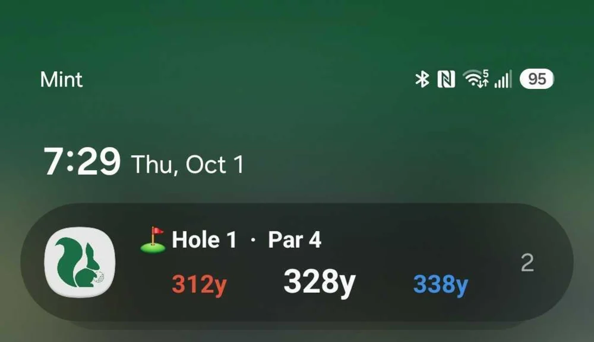

GPS distances on your lock screen
Oct 1, 2026

Checking your yardage used to mean pulling out your phone, unlocking it, and opening Squabbit every time you walked up to your ball. Now your distances to the green sit right on your lock screen while you play, so you can glance down and get your number without opening the app.
Always on while you play
Start a round and the GPS card appears on your lock screen, showing your distances to the front, middle, and back of the green. It updates as you move down the hole, so the numbers are always current. On iPhone it shows up as a Live Activity (and on the Dynamic Island); on Android it appears as an ongoing notification.
You're in control
The card is yours to switch on or off, with settings to control what it shows. Because it keeps GPS running for the length of your round, you decide when you want it: flip it on for the rounds where you want distances at a glance, and leave it off otherwise.
Update to the latest version of Squabbit, then turn on GPS distances on lock screen in settings and start your round.